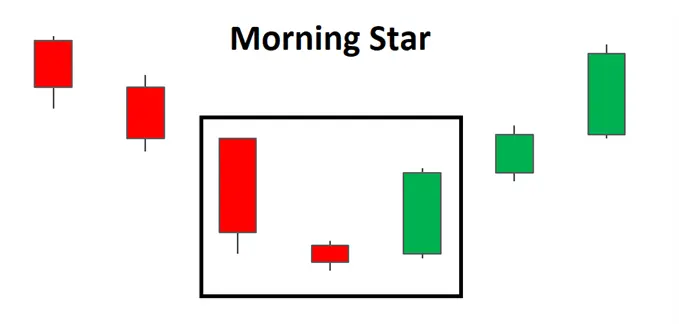

The Morning Star pattern is a three-candle, bullish reversal candlestick pattern that appears at the bottom of a downtrend. It reveals a slowing down of downward momentum before a large bullish move lays the foundation for a new uptrend.

| Morning Star Doji |
Traders will often look for signs of indecision in the market where selling pressure subsides and leaves the market somewhat flat. This is where Doji candles can be observed as the market opens and closes at the same level or very close to the same level. This indecision paves the way for a bullish move as bulls see value at this level and prevent further selling. The appearance of the bullish candle after the Doji provides this bullish confirmation.

| HOW TO IDENTIFY A MORNING STAR ON FOREX CHARTS |
Identifying the Morning Star on forex charts involves more than simply identifying the three main candles. What is required, is an understanding of previous price action and where the pattern appears within the existing trend.

| HOW TO TRADE THE MORNING STAR PATTERN |
The Morning Star pattern can be observed in the EUR/GBP chart below, where there is an established downtrend leading up to the formation of the reversal pattern.
Looking at the chart, once the formation has completed, traders can look to enter at the open of the very next candle. More conservative traders could delay their entry and wait to see if price action moves higher. However, the drawback of this is that the trader could enter at a much worse level, especially in fast moving markets.
Targets can be placed at previous levels of resistance or previous area of consolidation. Stops can be placed below the recent swing low, as a break of this level would invalidate the reversal. Since there are no guarantees in the forex market, traders should always adopt sound risk management while maintaining a positive risk to reward ratio.

When trading the Morning Star on forex markets, the price will very rarely gap as they do with stocks and so the three-candle pattern usually opens very close to the previous closing level.